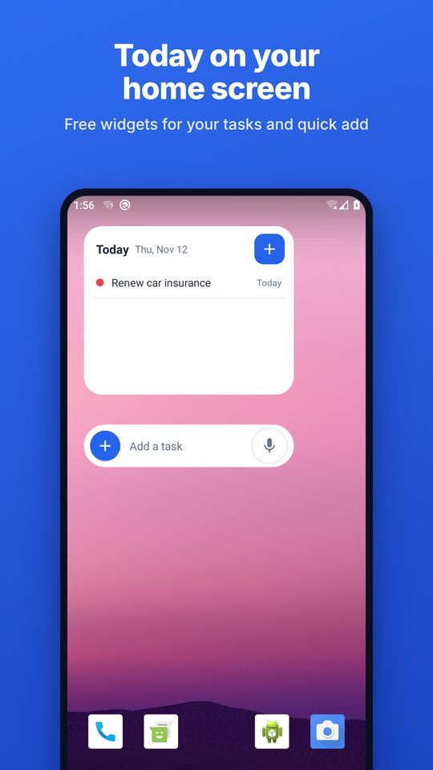

Triez votre liste de tâches par urgence et importance
Une matrice d'Eisenhower gratuite à imprimer, un petit guide pour s'en servir et une appli Android privée qui fait le tri pour vous.
Télécharger l'appli sur Google Play Télécharger le modèle à imprimerQu'est-ce que la matrice d'Eisenhower ?
La matrice d'Eisenhower aide à décider quoi faire ensuite en posant deux questions sur chaque tâche : est-elle urgente ? Est-elle importante ? Les réponses placent la tâche dans l'une des quatre cases.
Elle porte le nom de Dwight D. Eisenhower, à qui l'on attribue la phrase « Ce qui est important est rarement urgent, et ce qui est urgent est rarement important. » Stephen Covey a ensuite popularisé les quatre cases dans Les 7 habitudes de ceux qui réalisent tout ce qu'ils entreprennent.
L'utiliser en cinq minutes
- Notez tout. Videz votre tête sur une seule liste avant de trier quoi que ce soit.
- Demandez d'abord : « Est-ce important ? » Important veut dire que cela fait avancer quelque chose qui compte pour vous. L'urgence se ressent plus facilement, alors jugez-la en second.
- Puis : « Est-ce urgent ? » Urgent veut dire qu'il y a un vrai coût si ce n'est pas fait bientôt.
- Donnez une date à chaque tâche « Planifier ». Cette case contient ce qui compte le plus, et elle ne crie jamais. Sans date, rien ne se fait.
- Faites le point une fois par jour. Pour chaque tâche en retard, décidez : faite, aujourd'hui, un autre jour, ou abandonnée.
Modèle gratuit à imprimer
Une page, quatre cases, de la place pour écrire. Imprimez-la, ou gardez-la sur votre bureau comme feuille du jour.
Télécharger le PDF (A4) Format US Letter
Gratuit pour un usage personnel et en classe. Aucune adresse e-mail demandée.
L'appli Android
Matrice d'Eisenhower : Tâches fait le tri pour vous. Marquez une tâche comme urgente, importante ou les deux, et elle arrive dans la bonne case.




Gratuit
- La matrice, avec vues calendrier jour et mois
- Widgets d'écran d'accueil pour les tâches du jour et l'ajout rapide
- Dictez une tâche, la date et l'heure se remplissent toutes seules
- Sous-tâches, tâches récurrentes, étiquettes et rappels
- Une revue quotidienne qui passe en revue les tâches en retard une par une
- Export et import de vos données
Pro, en un seul paiement
- Une bulle flottante pour noter une tâche depuis n'importe quelle autre appli
- Ajout groupé : collez une liste et répartissez-la dans les cases
- Sauvegardes automatiques dans le dossier de votre choix
Pro s'essaie gratuitement pendant 7 jours, sans carte et sans inscription. Il n'y a pas d'abonnement.
Privée dès la conception
Pas de compte, pas de pub, pas de pistage, pas de statistiques. Vos tâches restent sur votre téléphone, sauf si vous choisissez de les sauvegarder ou de les partager. Lire la politique de confidentialité (en anglais).
Télécharger l'appli sur Google Play
Sur le blog
Les articles du blog sont en anglais.
- 50 vraies tâches triées dans les quatre cases
- Urgent ou important ? Dix tâches souvent mal classées
- La matrice d'Eisenhower pour les étudiants en période d'examens
Questions
L'appli est-elle vraiment gratuite ?
Oui. Toute la méthode, les widgets, les rappels, les tâches récurrentes et l'export sont gratuits pour de bon. Pro est un achat unique et facultatif pour quelques gains de temps.
Faut-il un compte ?
Non. Il n'y a rien à créer, et rien n'est envoyé à un serveur.
Existe-t-il une version iPhone ?
Pas encore. Pour l'instant, c'est Android uniquement.
Quelle différence entre urgent et important ?
Une tâche urgente a un vrai coût si elle n'est pas faite bientôt. Une tâche importante fait avancer quelque chose qui compte pour vous. Beaucoup de tâches sont l'un sans l'autre, et c'est tout l'intérêt de la matrice.
Que mettre dans la quatrième case ?
Les tâches ni urgentes ni importantes. Certains appellent cette case « Éliminer » ou « Supprimer ». L'appli l'appelle « Plus tard », car beaucoup méritent un second regard avant d'être abandonnées.
Comment vous contacter ?
Écrivez à eisenhower.mtrx@gmail.com.